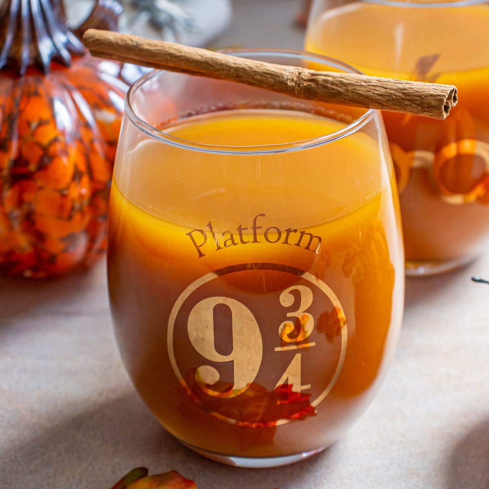

Pumpkin Juice
Description
Here's a pumpkin juice recipe that's perfectly balanced—not too sweet or thick—ideal for any autumn gathering. I discovered this recipe years ago for a party we hosted to celebrate the release of the final Harry Potter film. It turned out to be unexpectedly delicious and remains the best pumpkin juice recipe I've found. For an adult twist, it pairs wonderfully with spiced rum.
Ingredients
- 2 quarts apple cider, divided
- 1 (2 inch) piece fresh ginger, sliced
- 1 cinnamon stick
- 1/2 teaspoon whole cloves
- 1/2
cup brown sugar
- ¼ cup honey
- 1 (28 ounce) can pumpkin puree
Directions
- Stir 3 cups apple cider, ginger, cinnamon stick, and cloves together in a saucepan; bring to a boil, reduce heat to low, and simmer until slightly reduced, about 15 minutes.
- Remove saucepan from heat and immediately stir brown sugar and honey into the cider mixture until dissolved into the liquid.
- Pour the liquid into a wide glass dish and refrigerate until chilled completely, at least 45 minutes.
- Mix the chilled apple cider mixture with the remaining apple cider and the pumpkin puree in a large pitcher; stir until the puree dissolves into the liquid.
